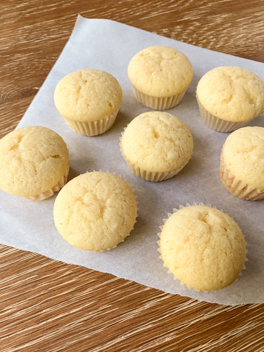

Home
Muffins

Description
This is a deliciously simple recipe for muffins that is egg free and low nickel. Enjoy a yummy and gentle start to your morning!
Ingredients
- flour
- sugar
- baking soda
- salt
- butter
Steps
- Preheat oven to 350 degrees Fahrenheit. Line mini muffin pan with muffin liners.
- Mix dry ingredients together in bowl.
- Add melted butter and water. Stir thoroughly.
- Scoop muffin batter into muffin cups.
- Bake for 14 minutes.
- Let cool and enjoy.